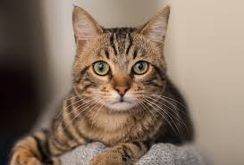

My Favorite Animal: The Cat

Hover on cat above!
cat, (Felis catus), also called house cat or domestic cat, domesticated member of the family Felidae, order Carnivora, and the smallest member of that family. Like all felids, domestic cats are characterized by supple low-slung bodies, finely molded heads, long tails that aid in balance, and specialized teeth and claws that adapt them admirably to a life of active hunting. Cats possess other features of their wild relatives in being basically carnivorous, remarkably agile and powerful, and finely coordinated in movement.
If you want to learn more about the cats, check out this Wikipedia page.
Some More picture if cats:

